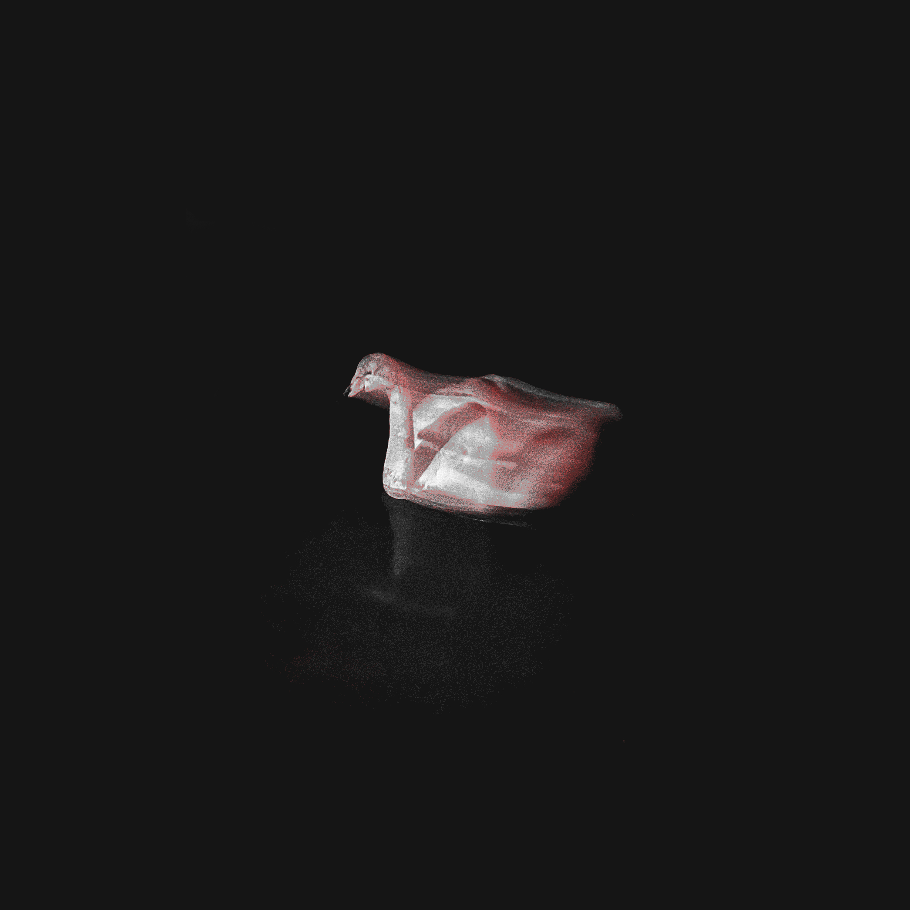

New album - Nautnir Þrjár
240116

Album cover by Ylfa Örk Hákonardóttir
In the spring of 2023, I was stuck in an airplane. Bored, I stared at the airstrip and watched baggage carts waggle along while I listened to some field recordings. This scene created an overwhelming urge to make something extremely simplistic where I would only be allowed to copy recordings, change their speed, and pan them - an approach inspired by the early laptop music from around the turn of the century and the work of Phil Niblock. When I finally got home I asked three musicians to send me a simple clip of them playing so I could go piece the recordings together. Within a week I had the album ready, three slow and unfolding pleasures.
Saxophone on track 1: Óskar Guðjónsson
Voice on track 2: Ásta Fanney Sigurðardóttir
Flute on track 3: John McCowen
Artwork: Ylfa Örk Hákonardóttir & Guðmundur Arnalds
Special thanks: John, Ásta, Óskar, Skúli, Ólöf, Gaukur, Ragnheiður, Ylfa, Juanma, Villi & Ölli.
Dedicated to Phil Niblock